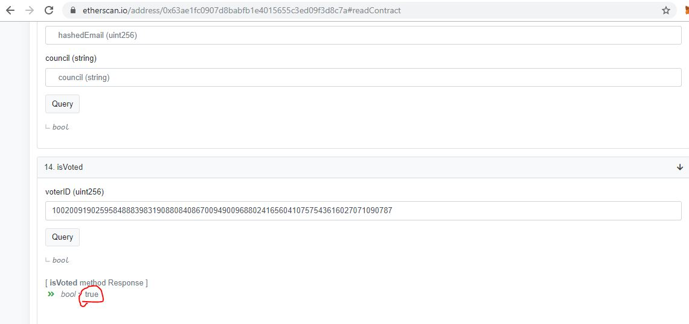
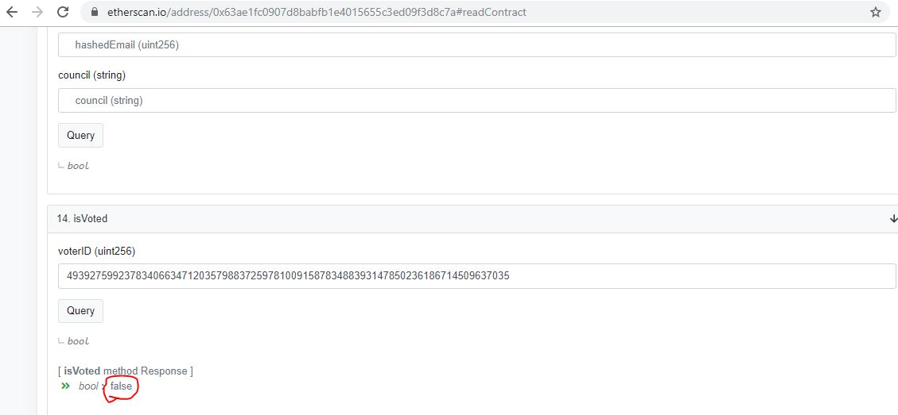
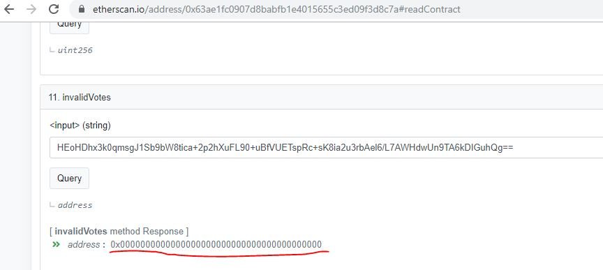
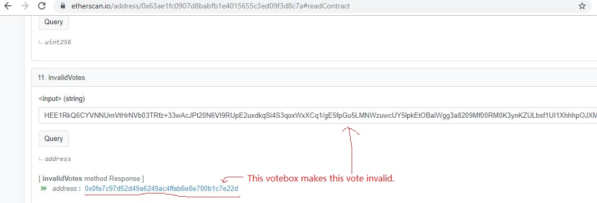

自2019年6月起, 香港人為守護自己的權利和自由開始左反對《逃犯條例》修訂草案運動. 2019年11月24日是區議會選舉的日子, 表達民意的大好機會. 但香港有不少人擔心政府會取消區議會選舉, 保障建制派的議席. 我們利用以太幣為基礎的區塊鏈智能合約做了這個民間區塊鏈2019區議會選舉, 確保香港人, 特別是使用網絡的年輕人, 能夠表達對區議會以至政府的意見. 所有程式碼和運作都會公開透明, 又盡量確保結果公平公正.
Since June 2019, Hong Kong people has started Anti-Extradition Law Amendment Bill Movement to protect their own freedom and rights. Hong Kong will have a District Council Election on 24 Nov 2019. It is a great oppotunity for people to express their view to district council and government. However, there are concerns that Hong Kong government will pause or cancel the election in order to protect the interest of pro-government parties. That's why we have started this project, a folk election based on smart contracts on the Ethereum network. It is to make sure the Hong Kong people, especially the young people who are familiar with the Internet, can express their views to the public All program codes and executions will be done in a open and transparent way. And the result will be as fair and just as possible.
更多技術詳情 More technical details (Chinese Only) Github page試運 2019年11月17日晚上10點開始至22日晚上10點 Test polling from 10pm 17th to 10pm 21th Nov 2019
公佈試運投票結果22日晚上11點 Announce the test polling result at 11pm 21th Nov 2019 結果網頁 Result page
正式投票 2019年11月24日早上7點半開始至24日晚上10點半 Real polling from 7:30am 24th to 10:30pm 24th Nov 2019
公佈正式投票結果25日晚上12點01分 Announce the election result at 12:01am 25th Nov 2019 結果網頁 Result page
這個票站是: This votebox is:
任何票站都隨時可能因太多流量或受到攻擊而關閉, 但只要有一個票站在, 選舉都能夠繼續舉行 Any votebox may be down anytime as too much traffic / attacked, but the election can still go on as long as not all votebox is dead
1) 到Etherscan.io (中立區塊鏈資訊平台), 使用選舉智能合約, 輸入中文全名和身份證號碼以得到選民號碼 Visit Etherscan.io (neutral Ethereum blockchain explorer), use election smart contract, input your full name and HKID number to get Voter ID
Link圖示 Example

2) 到以下網頁輸入選民號碼和電郵, 填寫選票. 電郵用來確保接收認證碼, 證明投票者為真人, 你將得到加密選票(需保密) Visit the following page to fill-in the Voter ID, email and vote. You will get an encrypted vote (keep this secret)
Link3) 到Etherscan.io, 檢查自己是否投了票, 和選票是否還有效 Visit Etherscan.io, check if you have voted and your vote is still valid.
Link已投票圖示 Example of voted
未投票圖示 Example of not voted
有效投票圖示 Example of valid vote
無效投票圖示 Example of invalid vote
You can
1) Join the testing and give feedback
2) Promote this project
3) Donate if you have ETH (We need 100 ETH in total for handling 200K votes, extra ETH will send to 星火, if they accept ETH)
Check our current balance here
4) Help extending the election to cover all council
5) Help building the website (need someone to rebuild the website with design) and debug
6) (Most Important) Become one of the votebox
Visit our github page for details.